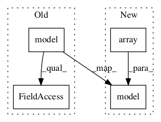

a6652b0c1997bb47dd502bf674e0b3b9b2d09d23,examples/reinforcement_learning/tutorial_cartpole_ac.py,Critic,learn,#Critic#Any#Any#Any#,172

Before Change
v_ = self.model([s_]).outputs
// td_error, _ = self.sess.run([self.td_error, self.train_op], {self.s: [s], self.v_: v_, self.r: r})
with tf.GradientTape() as tape:
v = self.model([s]).outputs
// TD_error = r + lambd * V(newS) - V(S)
td_error = r + LAMBDA * v_ - v
loss = tf.square(td_error)
grad = tape.gradient(loss, self.model.trainable_weights)
After Change
def learn(self, s, r, s_):
v_ = self.model(np.array([s_]))
with tf.GradientTape() as tape:
v = self.model(np.array([s]))
//// TD_error = r + lambd * V(newS) - V(S)
td_error = r + LAMBDA * v_ - v
loss = tf.square(td_error)
grad = tape.gradient(loss, self.model.trainable_weights)
In pattern: SUPERPATTERN
Frequency: 4
Non-data size: 4
Instances
Project Name: tensorlayer/tensorlayer
Commit Name: a6652b0c1997bb47dd502bf674e0b3b9b2d09d23
Time:
Author: null
File Name: examples/reinforcement_learning/tutorial_cartpole_ac.py
Class Name: Critic
Method Name: learn
Project Name: tensorlayer/tensorlayer
Commit Name: a6652b0c1997bb47dd502bf674e0b3b9b2d09d23
Time:
Author: null
File Name: examples/reinforcement_learning/tutorial_cartpole_ac.py
Class Name: Actor
Method Name: choose_action
Project Name: tensorlayer/tensorlayer
Commit Name: a6652b0c1997bb47dd502bf674e0b3b9b2d09d23
Time:
Author: null
File Name: examples/reinforcement_learning/tutorial_cartpole_ac.py
Class Name: Actor
Method Name: learn
Project Name: tensorlayer/tensorlayer
Commit Name: a6652b0c1997bb47dd502bf674e0b3b9b2d09d23
Time:
Author: null
File Name: examples/reinforcement_learning/tutorial_cartpole_ac.py
Class Name: Actor
Method Name: choose_action_greedy